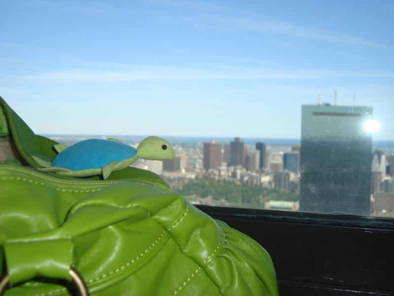
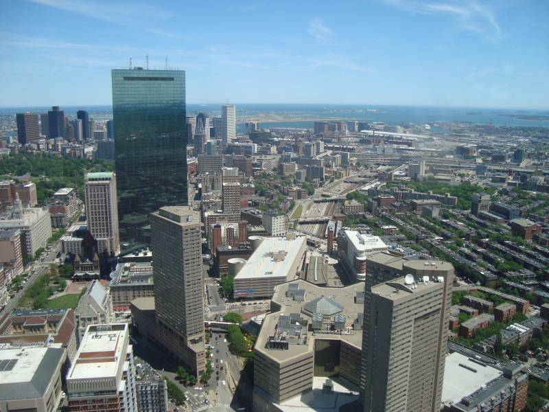

První náš opravdu volný den využijeme k tomu, že si pořádně přispíme a pak razíme šalino-metrem do Bostonu. Včera večer už se mi moc nechtělo fotit, ale dnes to hodlám napravit a tak všecko dokumentuju, tohle město za to rozhodně stojí a hlavně, krásné parky ve středu města nabízí spoustu pěkných zákoutí. Architektura Bostonu je také hodně zajímavá - najdete tu vedle sebe budovy historického ražení (kostely a tak) a moderní mrakodrapy, celkově to působí zvláštně, ale rozhodně se to esteticky nebije. A do toho všeho spousta zeleně. Projdeme se po jedné z hlavních nákupních tříd a zamíříme k Prudential Tower, který je se svými 52 patry jedním z nejznámějších a nejvyšších bostonských mrakodrapů.

Boženka na Prudential Tower :)
V 50. patře se nachází vyhlídka a počasí nám dneska opravdu přeje. Je nádherně jasno, sluníčko opět připaluje, takže fotíme jako o život. Z ptačí perspektivy si můžeme prohlédnout letiště, řeku Charles, v dáli univerzitní kampus bostonský baseballový stadion…celé město máme jako na dlani :-).

Boston - město mrakodrapů a zeleně
Vyhlídka je doplněna i několika interaktivními koutky a výstavou o přistěhovalcích. Když se dostatečně pokocháme, vydáme se courat po obchodech :-)…největší módní zážitek nám poskytne obchůdek Anthropology - co kousek, to skvost. Napřed se nám s mamkou zdají ceny poněkud přemrštěné a vysoké, ale vzápětí usoudíme, že to vlastně zas až taková hrůza není a nakonec se rozhodneme, že tu poslední den naší dovolené utratíme zbytek peněz :D:D:D…Alespoň jedny šaty odsud musím mít, nutně :D…Vlezeme do dalšího obchoďáku, kde mají šaty ještě o kapku dražší a snad ještě hezčí, ale to už opravdu trpím a musím z tama brzo vymáznout. V příštím životě se hodlám narodit jako milionářská dcera a pořídit si tady kompletní šatník 8-)…
Mezitím nám dost vyhládne, takže si v přízemí Prudential Tower objednáme jakýsi japonský fastfood a celkem kvalitně se z toho přejíme…Zbytek dne už ani moc nestojí za řeč. Z běhání po Bostonu mě k večeru už pěkně bolí tlapky, takže bráchův návrh, abychom vyrazili někam na večeři, s díky odmítneme a radši ho pozveme k nám na privát, kde plánujeme náš víkendový výlet do NY. Nakonec se dohodneme, že vyrazíme na neděli a pondělí a zarezervujeme si pokoj v nějakém hotýlku v China Town. A já už se začínám nehorázně těšit :-) !
Komentáře (1)
Komentáře jsou uzavřené.